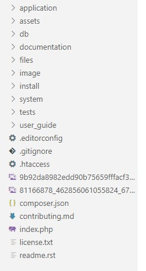

Thank you for purchasing "Shipping Master". If you have any questions that are beyond the scope of this help file, please feel free to email our support at info@synchronisebd.com Thanks so much!
"Shipping Master" is a fully functional Codeigniter based app and developed with care. It is fully responsive template based on Twitter Bootstrap framework. It also uses open source Admin LTE to design the admin panel Its not only responsive whereas it is retina ready also, now no blurry images on your HiDPI and retina devices.
"Shipping Master" is very easy to update and modify, it will adapt your website and brand in no time. Steps for modification and updating are described step by step in this exclusive documentation.
Whole app is divided in to several directories and subdirectories. The whole directory structure is given below. The work of every component and subcomponent can be easily understood by their name.

RewriteEngine on
RewriteBase /delivery/ //here delivery is the subfolder name you should change yours one here
RewriteCond %{REQUEST_FILENAME} !-f
RewriteCond %{REQUEST_FILENAME} !-d
RewriteRule ^(.*)$ index.php/$1 [L]
RewriteEngine on
RewriteBase /delivery/ //here delivery is the subfolder name you should change yours one here
RewriteCond %{REQUEST_FILENAME} !-f
RewriteCond %{REQUEST_FILENAME} !-d
RewriteRule ^(.*)$ index.php/$1 [L]
A default user will be created when the database migrations run for the first time.
This User will have the below login Credentials:
Username: admin
Password: admin
You can edit the default user by through the Admin Panels Users section after logging in.